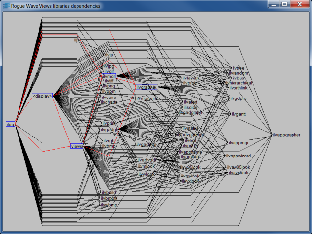

libdepsPerforms the Hierarchical layout on the Rogue Wave Views libraries graph.

The Gadgets package must be installed to be able to build this sample.
Use the Space or Ctrl+L accelerators to perform the Hierarchical layout.
Use the Ctrl+P accelerator to create a Postscript dump of the current graph.
Use the Ctrl+F or Ctrl+S accelerator to search for a library.
IlvHierarchicalLayout